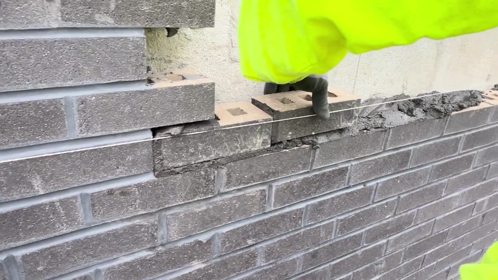
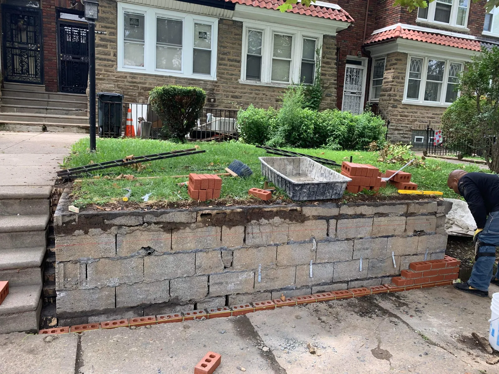
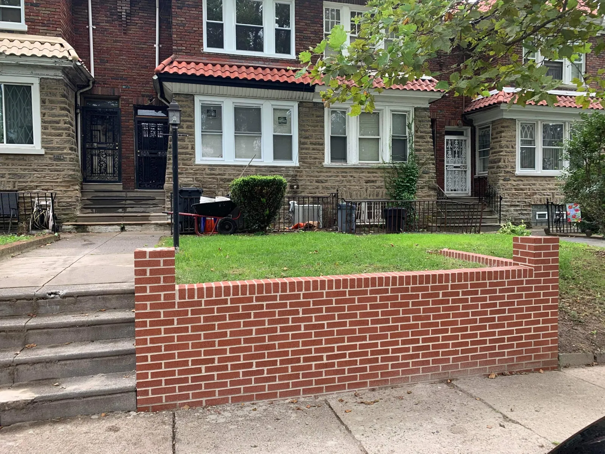

Brick and stone masonry
New work and repair on rowhomes, houses and commercial buildings, set by a crew trained in BAC Local 1. We match existing brick and mortar so a repair blends into the wall around it.
Repairs that disappear into the wall
Most masonry problems start small: a crumbling joint, a loose brick, a stain that keeps coming back. Caught early, they're a repair. Left alone, they become a rebuild.
Jimmy Harris walks every masonry job before it's quoted. You get an itemized estimate that says exactly which courses, joints and materials are included, and a crew that leaves the site cleaner than they found it.

Masonry we build and repair
Don't see your project here? If it's brick, block or stone, ask.
Brick and block
- Bricklaying and stone masonry
- Brick veneer over CMU
- Tuckpointing and repointing
- Chimney rebuilds and repair
Restoration
- Facade restoration
- Mortar joint repair
- Brick and stone matching
- Historic masonry repair
- Cleaning and sealing
Outdoor
- Retaining and garden walls
- Patios and paver walkways
- Steps and stoops
- Entry columns and mailboxes
Masonry we've finished


Failing block retaining wall refaced in red brick, with a soldier course cap and end piers
When to call a mason
Small problems get expensive when water gets behind the face of the wall. If you see any of these, have it looked at.
- Crumbling mortar jointsJoints you can scratch out with a key let water into the wall behind them.
- Loose or missing brickGaps let water in and weaken the courses around them.
- SpallingBrick faces flaking or popping off usually means trapped moisture and freeze damage.
- Water stainingWhite streaks or dark patches point to water moving through the masonry.
- Leaning or bulging wallsRetaining and garden walls that move need attention before they fail.
- Gaps at windows and stepsSeparation between brick and other materials lets water reach the structure.
From first call to final walkthrough
Tell us about the project
Call, text or send the form with photos if you have them.
Free site visit
We look at the wall up close, take measurements and talk through options.
Itemized quote
Scope, materials, schedule and price, line by line, with one point of contact.
Work and walkthrough
We protect the property, do the work, clean up and walk it with you.
One crew for the next step too
 Concrete restoration
Concrete restoration Procurement
ProcurementMasonry questions
If your question isn't here, call or text and you'll get a straight answer.
Is the estimate free?
Yes. We visit the property, look at the wall up close, take measurements and send an itemized quote with no obligation.
Can you match my existing brick and mortar?
Usually, yes. Our suppliers carry hard-to-find brick and stone, including matches for older rowhomes, and we mix mortar to match the color and joint profile of the wall around the repair.
How long will my project take?
It depends on size, access and weather. Your quote includes an estimated schedule, and you'll hear from us if weather moves a date.
Do you handle permits?
When a permit is required, we help you through the process and make sure the work meets local code.
Can masonry be done in cold or wet weather?
Mortar needs the right temperature and moisture to cure properly. If freezing temperatures or heavy rain would compromise the work, we reschedule and tell you right away.
Do you warranty your masonry work?
Yes. Masonry projects carry a workmanship warranty. If an issue with our work comes up during the warranty period, we come back and fix it at no cost to you.